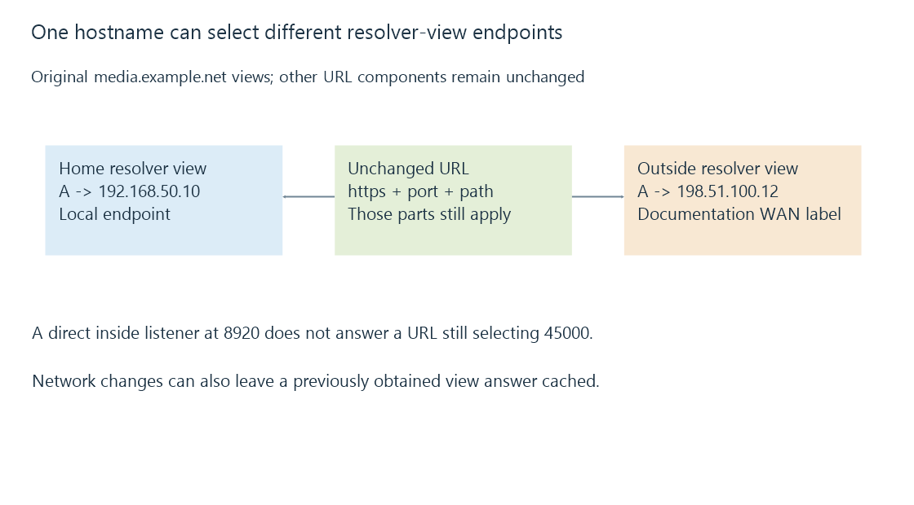

Split DNS and location-dependent server endpoints
Split DNS supplies different answers for a name under different resolver views, allowing one server hostname to select local and external endpoints without changing its other URL components.
The same server hostname can lead to a local endpoint at home and an outside endpoint when the viewer is away.
Split DNS makes that choice in the name-resolution view rather than asking every user to keep two hostnames.
One name, two answers
This original reduced view model uses documentation data for the outside label:
{
"name": "media.example.net",
"views": {
"homeResolver": {"type": "A", "address": "192.168.50.10"},
"outsideResolver": {"type": "A", "address": "198.51.100.12"}
}
}
The answer depends on the resolver/view that handles the query. Physical location alone does not force the home answer if the client uses another DNS path.

The inside endpoint can be the server itself or an appropriate local proxy. It must implement the service the client’s unchanged URL requests.
Address selection does not rewrite the URL’s port
Suppose the public URL is:
https://media.example.net:45000/
Outside, the gateway maps TCP 45000 to the server’s configured HTTPS listener at 8920. Now make the inside A answer point directly to that server at 192.168.50.20.
The home client still requests port 45000. Ordinary A-record resolution does not substitute 8920, so the direct inside path fails if nothing listens on 45000 there.
A local proxy or listener using the requested port can provide the intended inside endpoint. Alternatively, the connection design can use separate URLs. The DNS answer alone cannot choose between those arrangements.
The hostname remains the requested identity
Changing the resolved address does not replace media.example.net in the URL. In HTTPS, the client still needs the service’s certificate/authentication context to satisfy that name.
A consistent hostname can therefore preserve the requested identity across two address paths. It does not guarantee that both endpoints were configured consistently.
Path prefixes matter too. If one endpoint serves an application under a prefix and the other expects another path, the same URL can select a different resource arrangement even with correct address resolution.
Network changes can leave an old view cached
A phone can obtain the home answer and then move onto mobile data while retaining it. That private address may no longer be reachable from the new network.
The reverse transition can retain the outside answer at home. It then depends on the outside/hairpin path rather than automatically using the local one.
DNS explains record lifetimes. Resolver selection and VPN-provided DNS can also change which view supplies the next answer.
Split DNS and NAT loopback solve different parts
Split DNS can supply an inside endpoint so the client avoids sending the connection to the outside gateway mapping.
NAT loopback instead makes that outside endpoint usable from the inside. One can work while the other is absent.
See Also
- DNS resolution, record types and cached answers
- NAT loopback and same-network public endpoints
- VPN routing, overlapping prefixes and split tunneling
- Reverse proxies and the two-sided server path